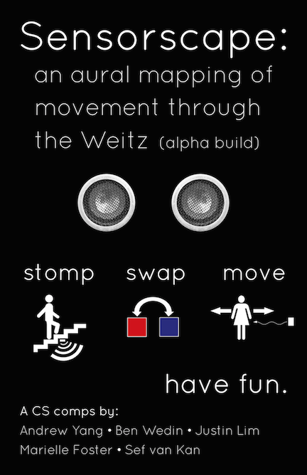
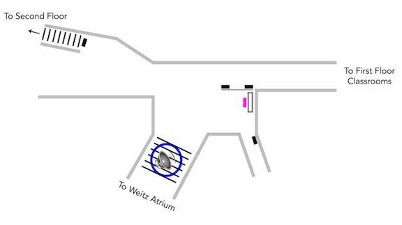

What was our project?
What did we create?
We implemented a sensor network as an interactive art installation inside the Weitz Center for Creativity. The site for these sensors is at the top of the main stairs leading out from the Weitz Atrium, by the main elevator (see diagram).
This location is a highlytrafficked area in the building while minimally disrupting students seeking quiet study. In this space we express our data through audio and visualization. We've created a soundscape with different sensors triggering different sounds. The sensor input magnitude modulates the sounds through various filters.